Rethinking Writing:
Systems for Clearer Thought
In an age of information overload, how can we improve our most fundamental tool for thinking? We are engineering new writing systems designed from the ground up to enhance human cognition, enabling more efficient reading, intuitive writing, and ultimately, more powerful structured thought.